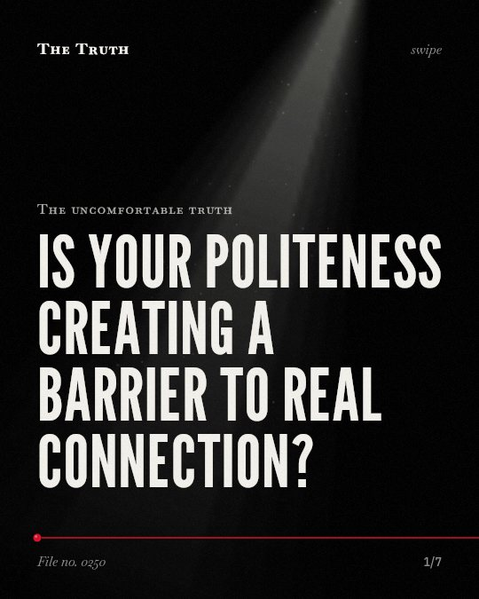

The uncomfortable truth
Is your politeness creating a barrier to real connection?

Excessive emoji use in first contacts leads to diminished outcomes.
Research shows that using too many emojis when meeting someone new can reduce the quality of the interaction.
Established. Several studies combined, or official data. The evidence is mixed.
What the research found
Patients with orbitofrontal damage were aware of social norms of intimacy but were unaware that their task performance violated these norms.
“Although patients with orbitofrontal damage were aware of social norms of intimacy, they were unaware that their task performance violated these norms.”
Study, 2006. Beer et al., Journal of Cognitive Neuroscience. This shows a link, not a cause.
Excessive emoji use in a first-contact scenario leads to diminished interpersonal outcomes.
“A first online experiment ( N = 188) revealed that excessive emoji use in a first-contact scenario leads to diminished interpersonal outcomes, corresponding to the drawbacks of overly intense nonverbal displays in natural interactions.”
Experiment, 2023. Stein, Journal of Nonverbal Behavior.
Digital networks have reshaped deep intimacy and societal norms, which has consequences for social well-being.
“The findings of the study stress how the digital networks have reshaped the deep intimacy, social capital and the societal norms along with the consequences for technology design & the social well-being.”
Systematic review, 2025. Zaka et al., Physical Education Health and Social Sciences.
Stimulus messages containing more emojis also evoke stronger emoji use in return during interactions with acquainted partners.
“Inviting participants to reply to fictitious text messages (at varying levels of interpersonal intimacy), it was observed that stimulus messages containing more emojis also evoke stronger emoji use in return”
Experiment, 2023. Stein, Journal of Nonverbal Behavior.
Friendship yields larger positive effects on intergroup attitudes than other less intimate forms of contact.
“Furthermore, there is growing research evidence that friendship yields larger positive effects on intergroup attitudes than other less intimate forms of contact (e.g., Davies, Tropp, Aron, Pettigrew, & Wright, 2011).”
Study, 2012. Davies et al., Psychology Press eBooks.
Digital networks reshape deep intimacy and social norms.
Digital tools change how you experience closeness and social well-being. However, friendship remains more effective for positive social change than other types of contact.
Politeness might be masking your actual connection.
The evidence does not prove that politeness inhibits connection, but it shows that digital mediation and social norms influence the depth of your intimacy.
This part is our reading of the evidence, not a finding.
A text message sent at 11 pm.
You see a string of emojis from someone you just met. You feel a brief spark of connection, but the interaction feels shallow.
The honest summary
The evidence suggests that social norms and digital mediation influence the depth and quality of intimacy, but it does not definitively prove that politeness itself inhibits authentic connection.
The sources provide a mix of neurobiological, sociological, and behavioral data without a single direct study measuring the specific psychological cost of 'politeness' on emotional vulnerability.
Are you connecting or just performing?
Sources
- Jan‐Philipp Stein (2023). Smile Back at Me, But Only Once: Social Norms of Appropriate Nonverbal Intensity and Reciprocity Apply to Emoji Use. Journal of Nonverbal Behavior. Experiment, cited 23 times.
- Kristin Davies, Stephen C. Wright, Arthur P. Aron et al. (2012). Intergroup contact through friendship: intimacy and norms. Psychology Press eBooks. Study, cited 27 times.
- Paris Zaka, Mehwish Mobeen, Fouzia Mumtaz (2025). Reconfiguring Social Bonds in Digital Societies: A Systematic Review on Social Relationships, Social Interaction & Social Networks. Physical Education Health and Social Sciences. Systematic review.
- Jennifer S. Beer, Oliver P. John, Donatella Scabini et al. (2006). Orbitofrontal Cortex and Social Behavior: Integrating Self-monitoring and Emotion-Cognition Interactions. Journal of Cognitive Neuroscience. Study, cited 470 times.
Also read for this file, not quoted
This file was researched and drafted by software, then checked by rules a model cannot talk its way around: each quote above was matched word for word against the paper, and every number had to appear in it. How files are made.